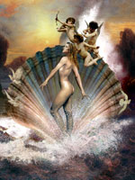

Афродіта ("пеннорожденная"), в грецькій міфології богиня краси і любові, що пронизує весь світ. За однією з версій, богиня народилася з крові Урана, оскопленного титаном Кроносом: кров потрапила в море, утворивши піну (по-грецьки - Афрос). Афродіта була не тільки покровителькою любові, про що повідомляв автор поеми "Про природу речей" Тит Лукрецій Кар, а й богинею родючості, вічної весни і життя.
Згідно з легендою, вона зазвичай з'являлася в оточенні своїх звичайних супутниць - німф, ор і харит. У міфах Афродіта виступала богинею шлюбів і пологів.
Завдяки східному походженням Афродіта часто ототожнювалася з фінікійської богинею родючості Астартою, єгипетської Исидой, ассірійської Іштар, шумерської Инанной. Стародавні греки вважали, що Афродіта надає заступництво героям, проте її допомогу поширювалася тільки на сферу почуттів, як це було у випадку з Парісом.
Незважаючи на те що служіння богині містило в собі певний відтінок чуттєвості (гетери називали її "своєю богинею"), з плином століть архаїчна богиня з сексуальною і розпущеної перетворилася в прекрасну Афродіту, яка змогла зайняти почесне місце на Олімпі. Факт її можливого походження з крові Урана був забутий.
Побачивши прекрасну богиню на Олімпі, всі боги закохалися в неї, але Афродіта стала дружиною Гефеста - наймайстернішого і самому некрасивого з усіх богів, хоча в подальшому вона народжувала дітей і від інших богів, включаючи Діоніса і Ареса. В античній літературі також можна зустріти згадки про те, що Афродіта була одружена і з Аресом, іноді навіть називаються діти, які були народжені від цього шлюбу: Ерот (або Ерос), Антерос (ненависть), Гармонія, Фобос (страх), Деймос (жах).
Можливо, найбільшим коханням Афродіти був прекрасний Адоніс, син красуні Мірри, перетвореної богами в миррове дерево, що дає доброчинну смолу - мірру. Незабаром Адоніс загинув на полюванні від рани, нанесеної диким вепром. З крапель крові юнака розцвіли троянди, а зі сліз Афродіти - анемони. За іншою версією, причиною смерті Адоніса був гнів Ареса, приревнувавши Афродіту.
Афродіта була однією з трьох богинь, засперечалися про свою красу. Пообіцявши Парису, синові троянського царя, найпрекраснішу жінку на землі, Олену, дружину спартанського царя Менелая, вона виграла спір, і викрадення Парісом Олени послужило приводом до початку Троянської війни.
Рудиментом архаїчного минулого богині був її пояс, в якому, згідно з легендою, були укладені любов, бажання, слова спокушання. Саме цей пояс Афродіта передала Гері для того, щоб допомогти їй відвернути увагу Зевса.
Численні святилища богині перебували в багатьох областях Греції - в Коринті, Мессении, на Кіпрі і Сицилії. У Стародавньому Римі Афродіта ототожнювалася з Венерою і вважалася прародителькою римлян завдяки своєму синові Енею, предку роду Юліїв, до якого, за переказами, належав і Юлій Цезар.